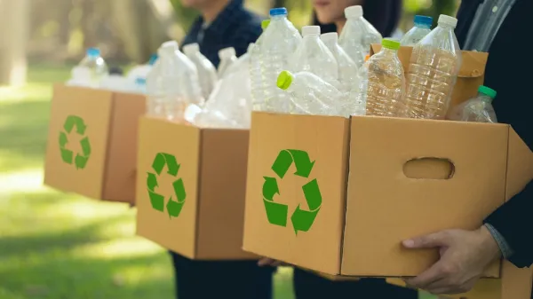
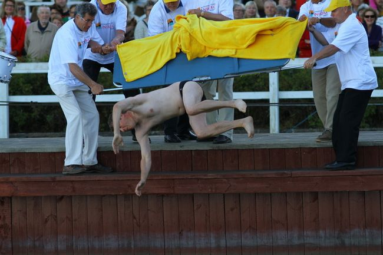

CURIOSIDADES
- Até 1809, a Finlândia fazia parte da Suécia. É por isso que o sueco também é um dos idiomas oficiais do país até hoje.
- A Finlândia possui dois idiomas: Finlandês e Sueco.
- Na Finlândia, a reciclagem é muito avançada: nove em dez garrafas de plástico são retornadas e quase 100% das de vidro são recicladas.

- A Finlândia tem um esporte oficial que consiste em arremessar aparelhos celulares! O campeonato é aberto a participantes de todas as idades.
- A Finlândia conquistou o primeiro lugar no ranking de liberdade de imprensa mundial do Reporters Without Borders 12 vezes desde 2002.
- Os finlandeses têm um dia para celebrar os “dorminhocos”, chamado de National Sleepy Head Day. No dia 27 de julho, a última pessoa a acordar
na casa é jogada no rio ou acordada com água na cara! Em algumas cidades, são realizadas cerimônias em que uma celebridade é atirada no rio
ou no mar às 7h da manhã. A identidade do escolhido pode ser mantida em segredo até o dia do evento!

- As multas por excesso de velocidade na Finlândia são calculadas de acordo com a renda da pessoa multada, o que acaba forçando alguns
milionários a desembolsarem mais de € 100.000 (620.300,00 Reais).
- Na Finlândia, praticamente não existe “invasão de propriedade particular” porque a enorme maioria das terras do país é livre para que todos
possam caminhar, apanhar frutas, pescar, acampar etc.
- A Finlândia é um dos únicos países do mundo a ganhar pelo menos uma medalha olímpica em cada um dos Jogos Olímpicos.
- Todas as gestantes da Finlândia podem solicitar um kit do governo para os seus recém-nascidos, composto de roupinhas, um saco de dormir,
produtos de higiene, fraldas, roupas de cama, um colchãozinho e uma caixa de papelão que pode servir, literalmente, de berço. Esta tradição
surgiu nos anos 30 e a sua ideal principal é oferecer um início de vida igual a todas as crianças do país, independentemente da condição de
sua família.